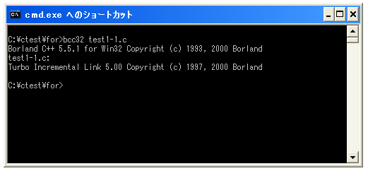
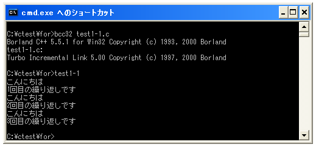

for文
同じ処理を繰り返し行うように記述する場合があります。例えば次のような例を考えて下さい。
printf("こんにちは¥n");
printf("こんにちは¥n");
printf("こんにちは¥n");
printf("こんにちは¥n");
上記は「こんにちは」と画面表示する処理を4回繰り返しています。また別の例を考えてみます。
int num = 1;
printf("数値は%dです¥n", num);
num += 1;
printf("数値は%dです¥n", num);
num += 1;
printf("数値は%dです¥n", num);
上記は数値の1から3を順に出力します。
このように同じ処理を繰り返して行ったり、変数の値を変えながら同じ処理を行ったりする時には「for」文を使用することで効率よくプログラムを記述することが出来ます。
for文の書式
それでは「for」文の使い方を見ていきます。「for」文の書式は次のようになっています。
for (初期化;条件式;変化式) 実行する処理;
「for」文は変数を1つ使用します。まず初期化式で変数に初期値を指定します。次に条件式で繰り返しを継続するための条件を記述します。例えば「変数の値が10以下かどうか」などです。条件式が真の間は繰り返しが行われます。そして変化式には繰り返しが1回行われる度に変数の値を変化させるための式を記述します。
例として、繰り返しを3回行う「for」文を作ってみましょう。この為には初期値として変数に「1」を格納、条件式は「変数の値が3以下かどうか」、そして変化式は繰り返しが行われる毎に変数に「1」を加える、で実現が出来ます。具体的には次のようになります。
int count;
for (count = 1; count <= 3; count = count + 1)
printf("こんにちは¥n");
上記は次のような動作を行います。
変数「count」に「1」を格納する 変数「count」の値が「3」以下かどうか評価する = 真 「こんにちは」を出力する 変数「count」の値に「1」を加えて「2」にする 変数「count」の値が「3」以下かどうか評価する = 真 「こんにちは」を出力する 変数「count」の値に「1」を加えて「3」にする 変数「count」の値が「3」以下かどうか評価する = 真 「こんにちは」を出力する 変数「count」の値に「1」を加えて「4」にする 変数「count」の値が「3」以下かどうか評価する = 偽 繰り返し処理終了
「for」文の基本的な流れはこのようになります。まず1回だけ変数の初期値を格納し、そして「for」文の中の処理を行う前にまず条件式を評価します。評価した結果が真の場合は「for」文の中の処理を行います。そして変数の値を変化させるための処理を実行します。ここまでで繰り返し処理は1回行われました。そしてまた条件式の評価を改めて行います。
変化式を適切に設定しないと条件式がいつまでも偽にならなくなり繰り返し処理が無限に行われてしまう(無限ループ)ことになりますので注意して下さい。
「for」文ではカウント用の変数を1つ用意し、格納された数値を1ずつ増加させて決められた回数だけ繰り返す処理がよく用いられます。この時繰り返したい回数をカウントする目的で使用される変数は慣例として「i」が使われます。また先ほどの例では変化式に「count = count + 1」と記述しましたが単に「count++」と書くのがシンプルに記述できるためよく使われます。
int i;
for (i = 1; i <= 3; i++)
printf("こんにちは¥n");
一度の繰り返しで複数の行を実行する
先ほどの書式では繰り返しの中で行われる処理はすぐ次に書かれた行の処理を実行するようになっていました。一度の繰り返しで複数の処理を行うには実行する範囲を「{」と「}」で囲んで指定します。
for (初期化;条件式;変化式){
実行する処理1;
実行する処理2;
実行する処理3;
...;
}
実際のプログラム例としては次のようになります。
int i;
for (i = 1; i <= 3; i++){
printf("こんにちは¥n");
printf("%d回目の繰り返しです¥n", i);
}
このサンプルのように条件判定用の変数の値を「for」文の中で参照して利用することも出来ます。
サンプルプログラム
では簡単なサンプルプログラムを作成して試してみます。
#include <stdio.h>
int main(void){
int i;
for (i = 1; i <= 3; i++){
printf("こんにちは¥n");
printf("%d回目の繰り返しです¥n", i);
}
return 0;
}
上記を「test1-1.c」の名前で保存します。まずコンパイルを行います。

コンパイルが終わりましたら「test1-1」と入力して実行します。

( Written by Tatsuo Ikura )

著者 / TATSUO IKURA
初心者～中級者の方を対象としたプログラミング方法や開発環境の構築の解説を行うサイトの運営を行っています。